ChatGPT 桌面 App 与 Codex#
打开 ChatGPT 桌面 App 后，可以选择使用 ChatGPT 或 Codex。ChatGPT 更适合日常问答，Codex 则更适合处理需要读取、创建或修改文件的任务，例如写代码、改文档和整理资料。
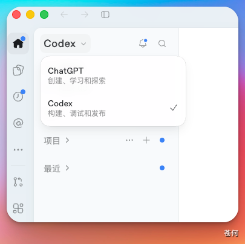
ChatGPT 页面#
切换到 ChatGPT 后，可以从左到右认识整个页面：
- 最左侧是功能栏，用于进入首页、文件、历史任务和插件等功能。
- 功能栏右边是对话侧边栏，可以新建聊天，也可以找到置顶对话、项目和最近使用的对话。
- 页面中间是工作区，用于输入要求并查看 ChatGPT 的回复和处理结果。
工作区上方可以选择 聊天 或 工作。如果只是提问、讨论想法，可以使用聊天；如果希望 ChatGPT 创建文档、整理文件或完成一项明确的任务，可以使用工作。
确定使用方式后，就可以在下方的输入框中描述需求。需要时，还可以添加文件、选择项目、调用插件、切换模型或调整权限。
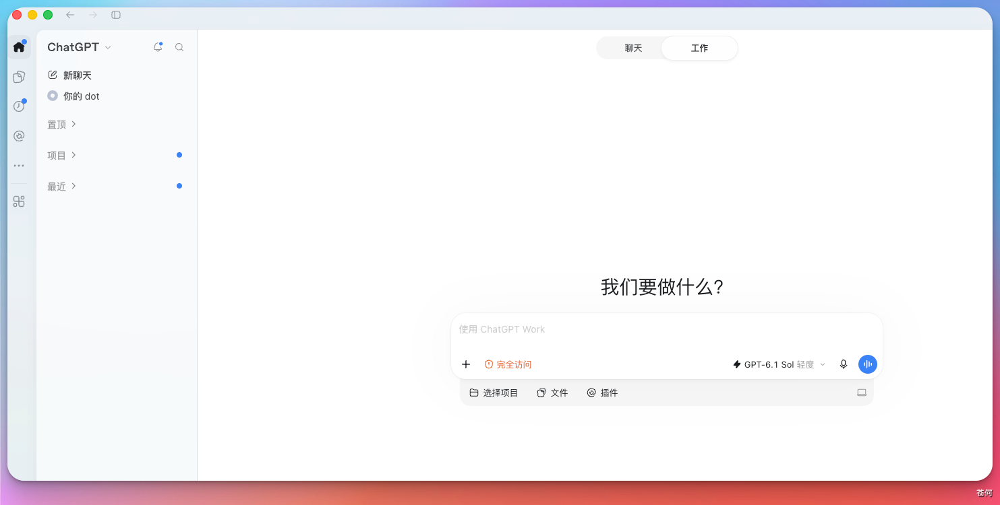
Codex 页面#
切换到 Codex 后，页面同样可以从左到右分为三个区域：
- 最左侧是功能栏，用于在首页、任务记录、插件等功能之间切换。
- 功能栏右边是项目与对话侧边栏，上方可以新建对话，下方会显示项目和最近使用的对话。
- 页面中间是任务工作区，用于输入任务、查看 Codex 的执行过程，以及检查生成或修改的文件。
开始任务时，可以直接新建一次临时对话，也可以先选择项目或打开本地文件夹。一次性任务使用临时对话即可；如果需要围绕同一批文件持续工作，使用项目会更方便。
选好工作位置后，在中间的输入框中说明想完成的任务。输入框还可以添加上下文、切换模型和调整权限，后面会分别介绍这些功能。
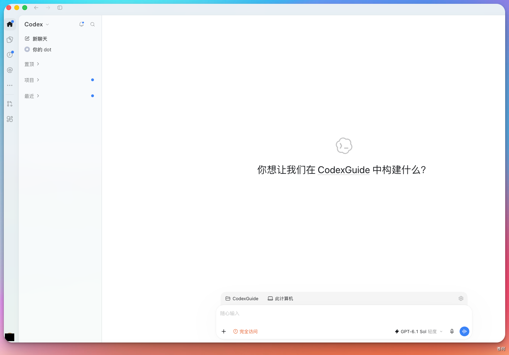
对话、项目和本地文件夹#
无项目对话#
无项目对话就是不选择项目，直接开始聊天。它适合只做一次的小任务，例如解释一段文字、整理一份临时内容。
这种对话会保存聊天记录，但不会自动使用其他项目里的文件和要求。下次新建对话时，如果还需要这些内容，就要重新提供。
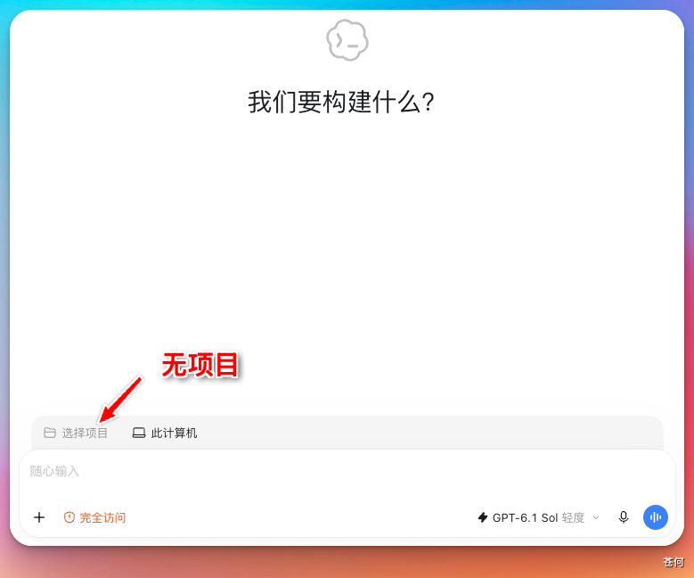
ChatGPT 项目#
如果一件事情需要分多次完成，并且每次都要使用相同的资料，可以创建一个 ChatGPT 项目。它就像一个在线资料夹，用来集中保存相关对话、上传文件和项目要求。
例如，做公众号运营时，可以创建一个“公众号运营”项目，把选题表、写作要求和相关文章放进去。以后继续写文章，只要进入这个项目新建对话，就可以继续使用这些资料，不需要每次重新上传。
创建项目时，先切换到 ChatGPT，再在左侧对话侧边栏中找到 项目，点击旁边的 +。
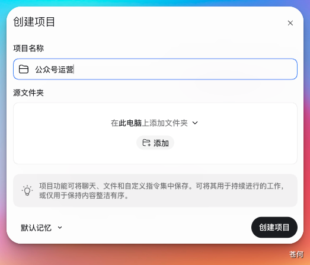
输入项目名称并完成创建后，点击项目名称即可进入。
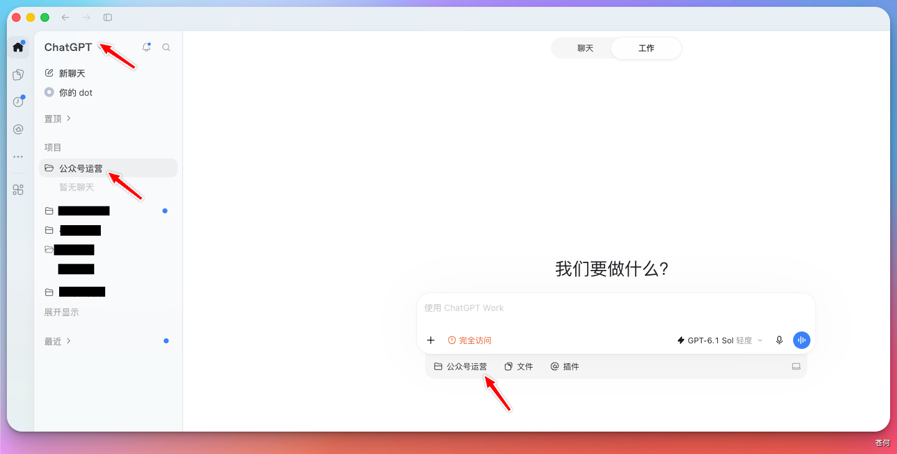
需要注意的是，ChatGPT 项目只能使用上传或连接到项目中的资料。它不是电脑里的文件夹，也不会自动读取电脑上的文件。
本地项目#
如果希望 Codex 直接处理电脑里的文件，就需要使用本地项目。
创建本地项目时，选择电脑上的一个文件夹，Codex 就会把这个文件夹作为当前的工作范围。
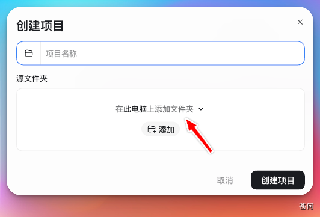
例如，打开网站项目所在的文件夹后，可以让 Codex 修改网站代码；打开存放文档的文件夹后，可以让它整理或更新其中的文档。
Codex 只能在当前权限允许的范围内读取、创建和修改文件。因为 Codex 的修改会直接保存到本地文件中，所以开始任务前，要先确认自己选择了正确的文件夹。
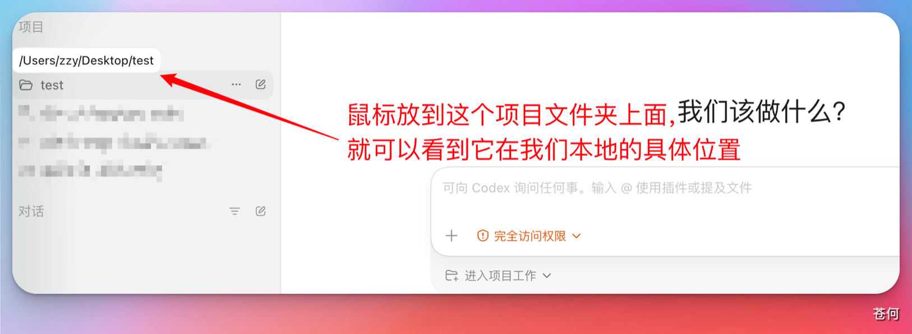
看到这里，只需要记住下面三个区别：
- 只做一次小任务，使用无项目对话。
- 需要反复使用同一批上传资料，使用 ChatGPT 项目。
- 需要 Codex 直接修改电脑里的文件，使用本地项目。
对话框中的主要控制#
Codex 的对话框主要包含以下几类控制：
- 添加上下文：附加文件、图片、截图、选中的文字或其他参考内容。
- 选择模型：在账号和工作区允许使用的模型之间切换。
- 选择工作位置：指定无项目对话、本地项目、Local 或 Worktree 等运行位置。
- 控制权限：决定 Codex 可以读写哪些文件、是否可以联网，以及哪些操作需要审批。
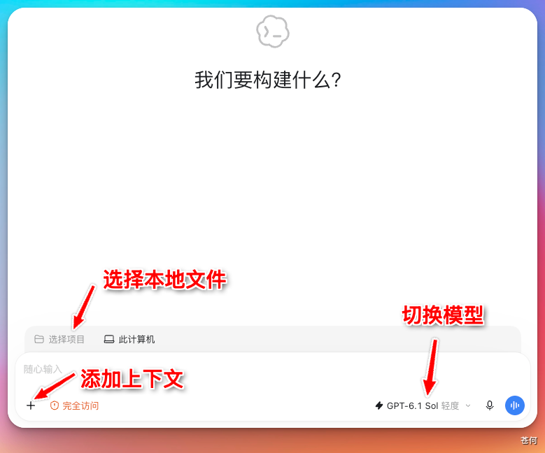
权限与运行环境#
当 Codex 读取或修改文件、访问网络、操作其他应用时，会受到权限设置的限制。对于刚开始使用的读者，可以先把权限理解成两个问题：
- Codex 可以操作到什么范围？ 沙盒会限制它能读取和修改哪些文件，以及能否访问网络或电脑应用。
- 超出这个范围时怎么办？ 可以让 Codex 询问用户、交给 Auto-review（自动审核）判断，或者直接拒绝操作。
Auto-review 只负责判断某个操作是否可以继续，不会扩大 Codex 原本能够访问的范围。
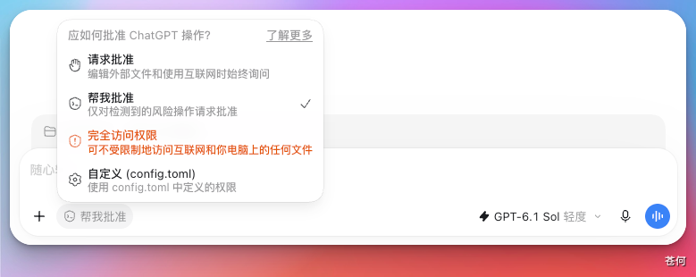
Skills、Plugins 和 MCP#
Skills#
Skill 是可复用的工作流程。它可以包含任务说明、模板、示例、脚本和参考资料，让 Codex 按相对稳定的步骤完成重复工作。
Codex 可以根据任务自动选择合适的 Skill，也可以在对话框中使用 $skill-name 显式调用。
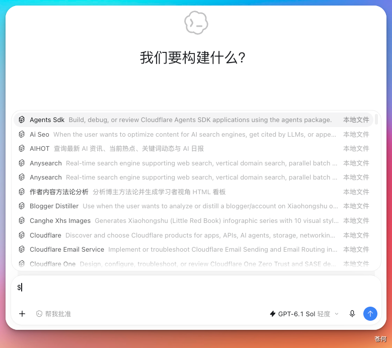
Plugins#
Plugin 是可安装的能力包，可以包含 Skills、MCP 服务器，或同时包含两者。用于 Codex 运行环境的插件还可以包含生命周期 Hooks。
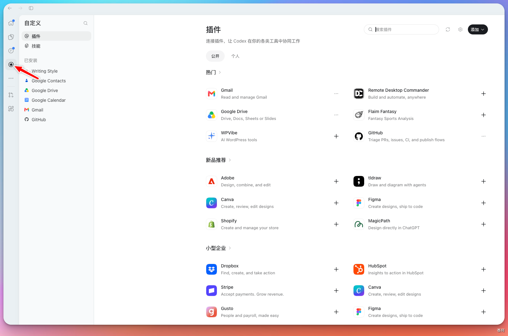
插件可以给 Codex 增加浏览器、Computer Use、表格、演示文稿、GitHub 等工作能力。部分插件需要登录账号、授权服务或进行额外配置。
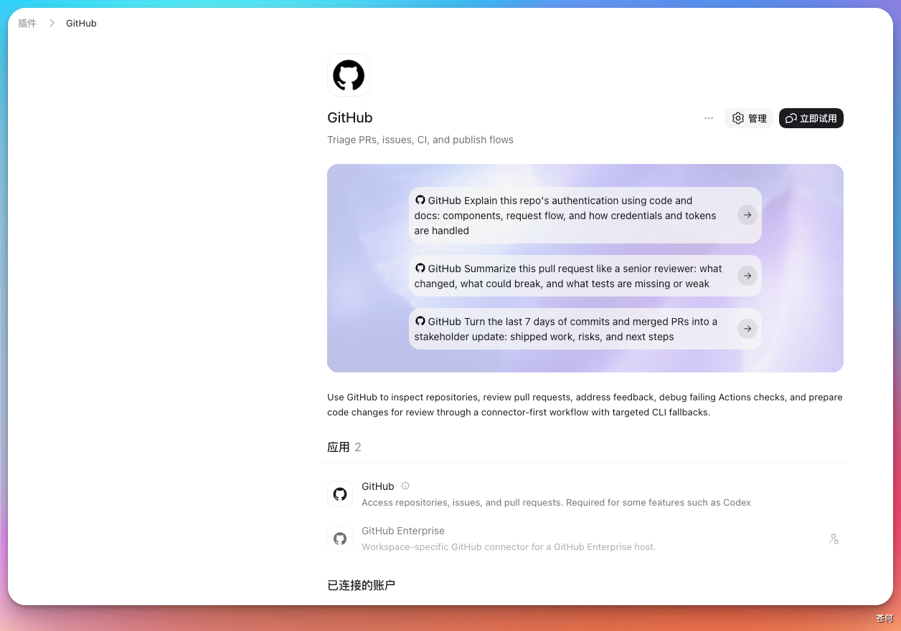
MCP#
MCP 服务器用于向 Codex 提供外部工具和上下文，例如文档、浏览器、设计工具、代码托管平台或内部系统。Skill 负责告诉 Codex 如何完成工作流程，MCP 则负责提供数据和可执行工具。
更多请看技能、插件与 MCP。
定时任务与后台工作#
如果一项工作需要定期重复，例如每天整理资料、每周生成报告，可以把它设置为 Scheduled task（定时任务）。到达设定时间后，Codex 会自动执行任务，并把结果保存在任务记录或原来的对话中。定时任务也可以调用已经配置好的 Skills 和 Plugins。
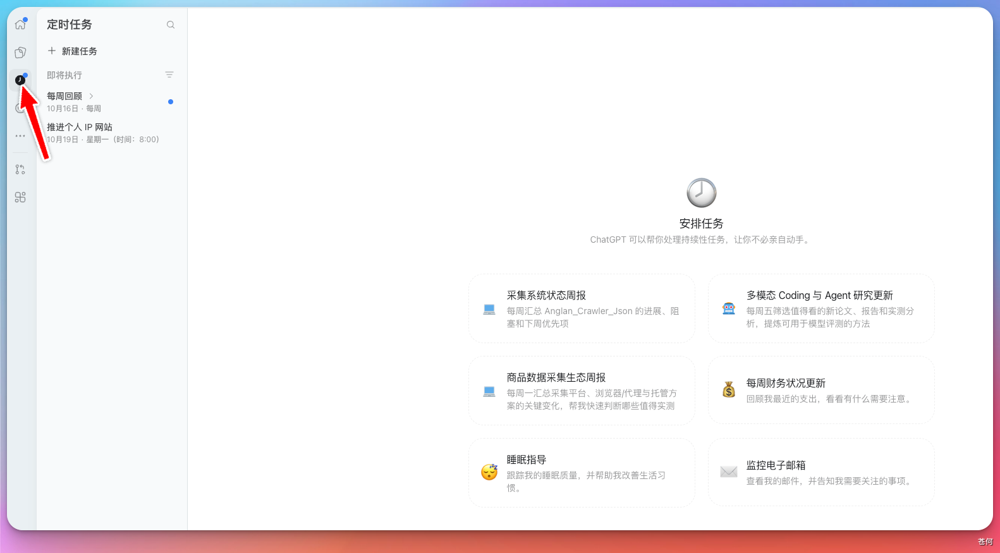
创建定时任务时，需要指定它在哪个项目中运行。如果选择的是普通文件夹，Codex 会直接处理这个文件夹里的内容；如果选择的是 Git 项目，还可以让任务在独立的 Worktree 中运行，避免影响正在修改的文件。
定时任务如果需要读取电脑里的文件，运行时电脑必须保持开机，并且 ChatGPT 桌面 App 不能退出。
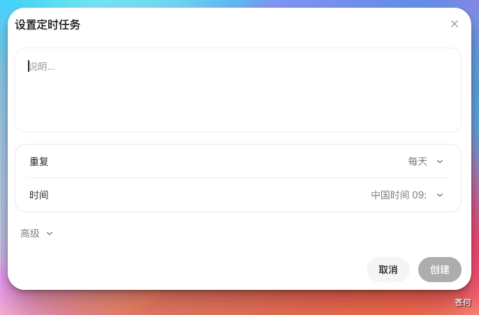
设置面板#
前面介绍的功能使用默认设置就能正常工作。如果想进一步调整通知、外观、权限或个性化选项，可以进入设置面板。
打开 App 菜单并点击 Settings 即可进入；也可以使用 Cmd + ,（macOS）或 Ctrl + ,（Windows）快捷键直接打开。

设置界面左侧是分类菜单，包含常规、外观、个性化和工具集成等选项。点击任一分类后，右侧会显示对应的设置内容，刚开始使用时保持默认即可。
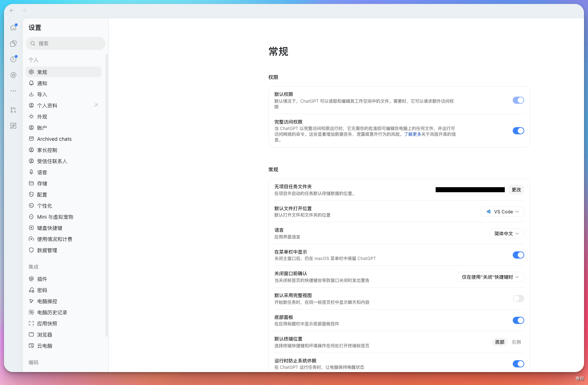
常规、通知与外观#
这几类设置主要用来调整使用习惯：
- 常规设置：修改消息发送方式、任务进行中收到新消息时的处理方式，以及运行任务时是否阻止电脑休眠。
- 通知设置：控制任务完成提醒。
- 外观设置：调整主题、颜色、字体和字号。
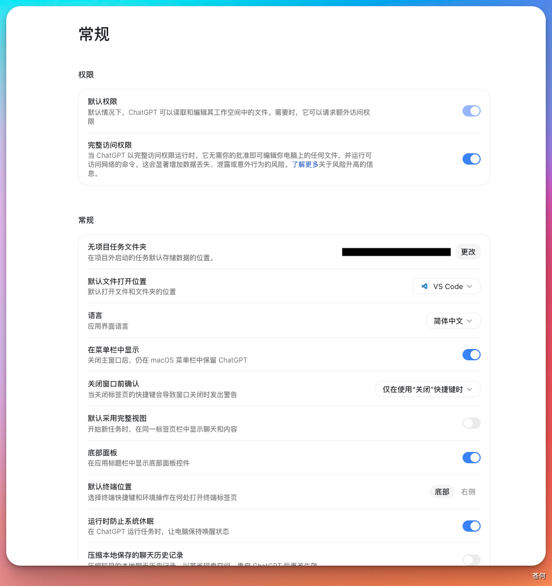
个性化、指令与记忆#
个性化设置就是提前告诉 ChatGPT 和 Codex：你希望它怎样与你配合。例如，可以要求它始终使用中文、回答简洁一些，或者按照固定的格式整理内容。
这些要求可以写在个人指令中。使用 Codex 时，个人指令会保存在当前电脑的 AGENTS.md 文件里；项目中如果还有自己的要求，Codex 也会一起参考。刚开始使用时，不需要手动修改这个文件，直接在设置中填写即可。
开启 Memories 后，Codex 还可以记住过去对话中的部分偏好和项目背景。你也可以选择是否允许它参考聊天记录、资料库文件和已连接的应用。
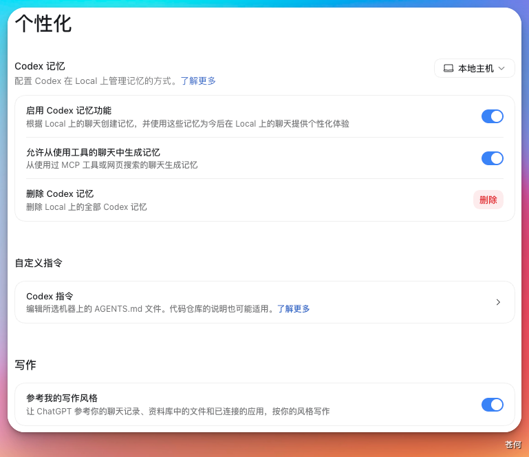
Browser 与 Computer Use#
这两个功能可以帮助 Codex 使用浏览器和电脑上的其他应用：
- Browser：让 Codex 打开网页、查找信息，还可以在你允许后下载或上传文件。
- Computer Use：让 Codex 像人一样查看屏幕、点击按钮和输入内容。例如，可以让它打开一个应用并完成指定操作。
在 macOS 上第一次使用 Computer Use 时，系统可能会询问是否允许屏幕录制和辅助功能。按照页面提示授权后，Codex 才能看到并操作其他应用。
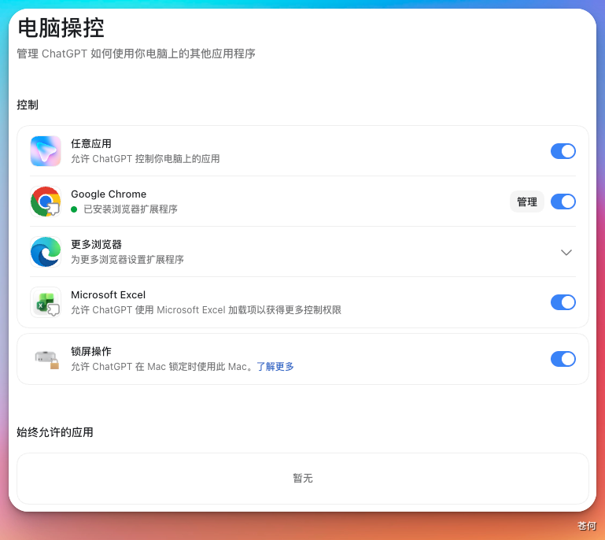
Git、环境与 Worktree#
这部分主要用于代码项目。如果你只是让 Codex 修改普通文档，可以先跳过。
Git 设置用于管理 Codex 处理代码版本的方式。
你可以在这里设置分支名称、提交方式等选项，让 Codex 按照项目原有的 Git 习惯工作。如果还不了解 Git，保持默认设置即可。
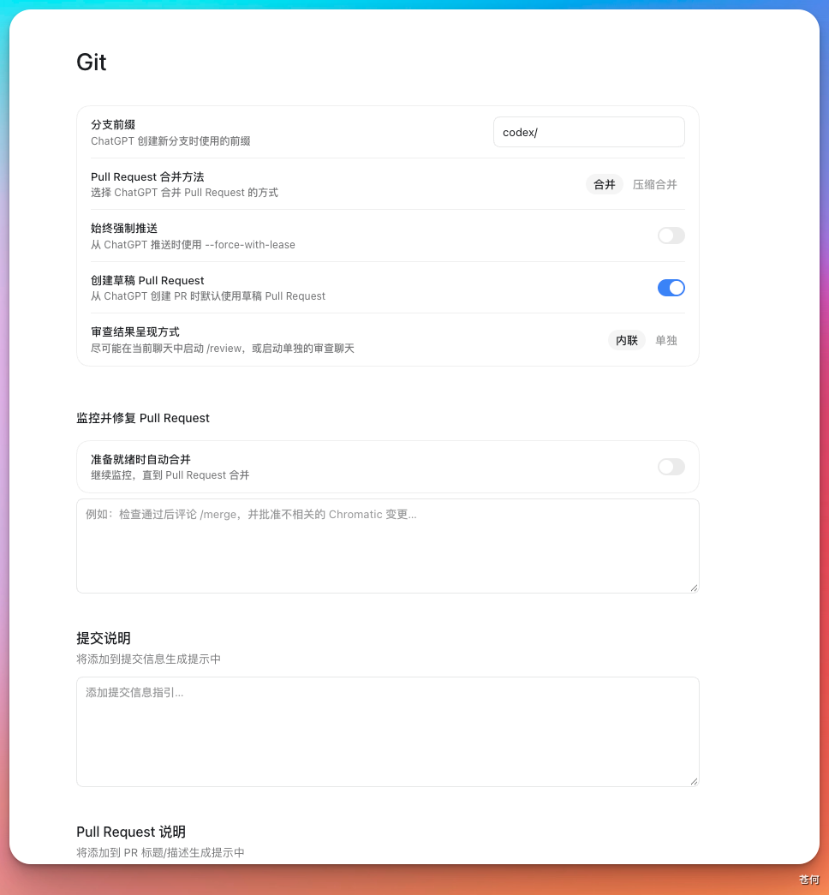
环境设置用于告诉 Codex 打开项目后要先做哪些准备。
例如，有些代码项目需要先安装依赖，才能启动项目或运行测试。把这些步骤配置好后，Codex 每次进入这个项目时就可以自动完成准备工作，不需要反复输入相同的命令。
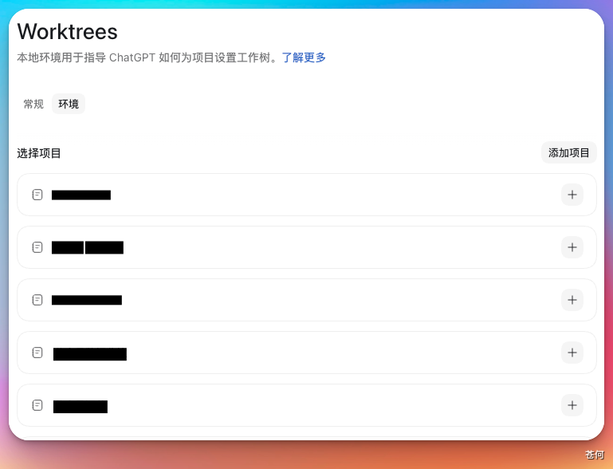
Worktree可以理解为给代码项目准备一个独立的工作副本。
假如你正在修改一个功能，又想让 Codex 同时处理另一个任务，就可以让 Codex 在 Worktree 中工作。这样，两边的修改会暂时分开，不容易互相影响。
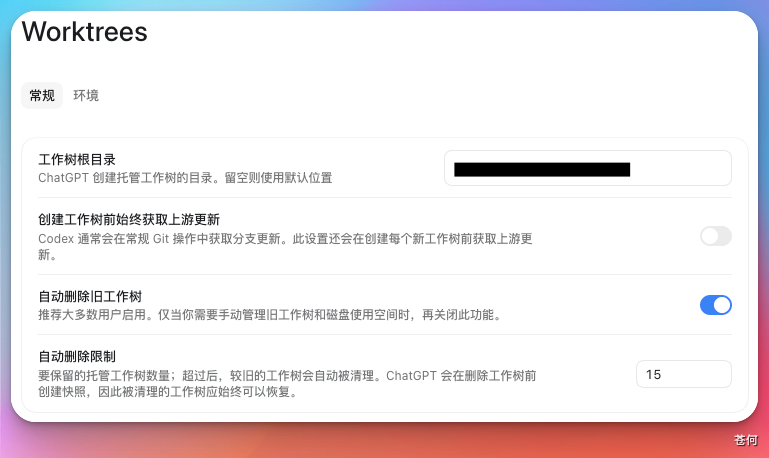
这里的 Local 指平时直接使用的项目文件夹，Worktree 则是为某个任务单独创建的工作区。需要时，Codex 可以将同一个对话在两者之间移动，让你继续检查或处理已经完成的修改。
已归档对话#
已完成但还需要保留记录的对话可以归档。归档不会立即删除对话，之后仍可从设置中的 Archived chats 恢复。
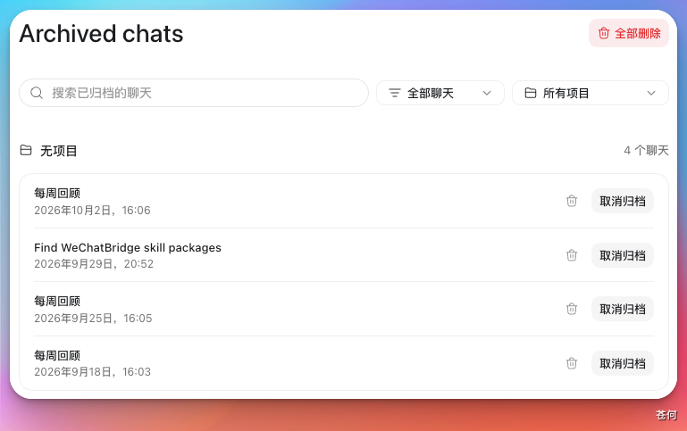
下一步#
下一步：用 Codex 完成第一个任务。